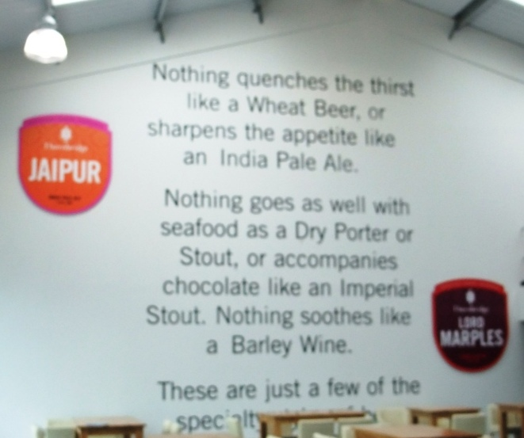
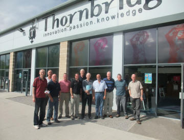
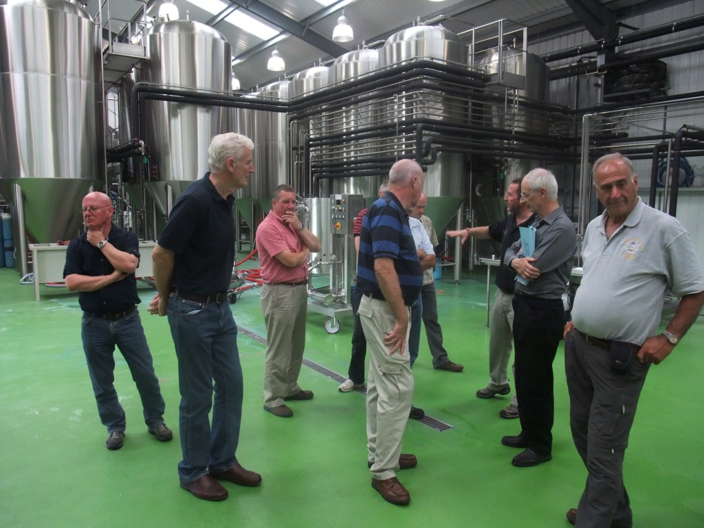
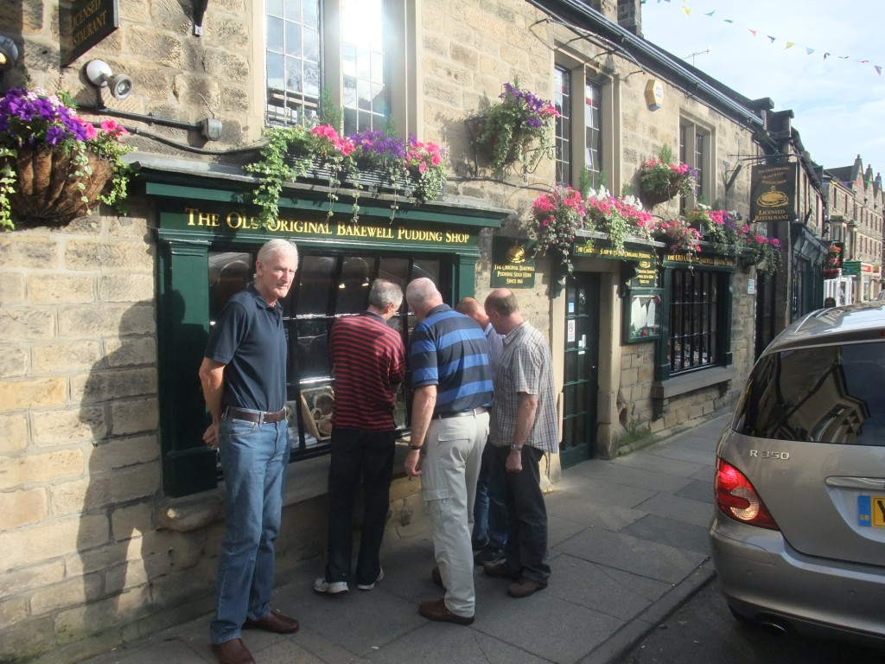
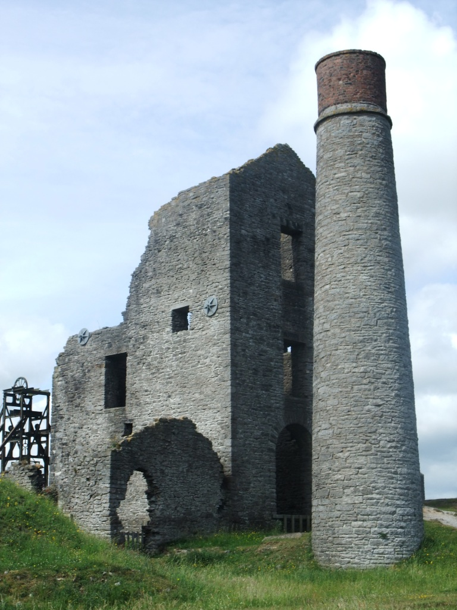

Summer Sqwalk 2010 Bakewell in the Peak District 1st July 2010
Up for it were:
Yup, Mid Week Tone, Pedro, Granpop Bill, Keithee's up for it, Stubbee, JayCee, Dasher, Spikelett, Mr Tahoohigh, Heavy Steve Machine, Jacko, Paul Hecky Thump and Tim Mothy,
and Austin Knott and Jax who accompanied us for most of the walk !!
Benny (Kev) failed to get out of bed, Chrissy Mayer and Thingy couldn't make it and Slippery had no leave left.
ROUTE (clockwise from Bakewell)

As we've come to expect from a Mr One-eye Tuohy organised sqwalk, nothing was left to chance !! Errr, well not quite !!
The weekend chosen for our outing collided head on with the Bakewell Carnival. So there was no pressure as just 2 weeks before the date Joe began to make enquiries about accommodation and realised we were stuffed. "I've got one last chance", he uttered, despairingly, having rang and pleaded with every other guest house in the vicinity. Oh what joy when the owners of the 'Everton' picked up the phone on their return through the volcanic dust hysteria from Dubai and confirmed they'd got vacancies. We were to be spread out of course - with 6 in the Wyedale, 2 in Bourne House, and 4 in the Everton. The relief on Joes face was a sight to be seen,,,, and ours.
Arriving mid afternoon we dropped our bags and boots off at the digs and met up in what was to become our favourite beer garden at the Peacock Inn before setting off towards the Thornbridge Brewery, the source of our favourite brew, Jaipur, on the Buxton Road. Well most of us did. Joe was obviously reading his map upside down and set off along the Matlock Road.
http://www.thornbridgebrewery.co.uk/index.php
The sun was shining and we were all in high spirits as we strolled to the brewery situated within an industrial estate to meet our guide. The tour began outside before we were shown around what must be the cleanest brewery we'd ever been to, clinically clean in fact. The floor had been designed to specific gradients for drainage purposes and had been painted in a bright green colour. Evidently the decision on the colour was the most debated issue during the assembly of the brewery. 'Perhaps you should paint your garage floor green', Yup suggested to Granpop Bill.
The main office where the brews were controlled was similar to the mission control room with computers dominating the room.



Needless to say we didn't complain, well not too much, and proceeded to neck them whilst discussing the prospect of ordering a few more cases to take home.
A delivery was arranged to one of the guest houses and the money was collected in by Keithee, our little treaze.
Back into town and as we sauntered around, Dasher spotted a bargain offer which we took full advantage of. A meal and a pint for a fiver at The Castle Inn.
Just to throw a bit of trivia into the notes, did you know the famous Bakewell pudding was invented accidentally at the Rutland Arms Hotel. One of their cooks misinterpreted the instructions and poured egg mixture over the jam instead of mixing it in the pastry and what should have been a tart was now a pudding.
And did you know the difference between a bakewell pudding and a bakewell tart?". I'm told, "You can’t shxx a bakewell pudding".

Down at the river we sat admiring the 13th century 5 arched bridge and waited for the annual children's raft race to come through. All shapes and sizes floated past from goals to police cars and indians. We thought of entering next year with a floating balti dish.
The evening came to a close after a few drinks here and there and quality time in our beloved beer garden again and an unsuccessful belated search for chips at midnight.
The following morning we headed down to the car park by the river to meet the walk only guys, namely Heavy Steve, Austin and Jax. We waited for Benny to show but gave up and took the group photos. "He’s not here", said Jacko, "whoever he is".
Spot the difference in these 2 photos.


We set off back over the bridge and back into town, where Jax spotted the toilets and slipped off with Austin to take advantage. 15 minutes later we realised they'd given us the slip as we waited and spotted them a mile ahead of us making tracks with their mobile phones, switched off of course !!!. It didn't help when we lost the route and had to seek the help of the local vicar and a young woman with a buggy up the lane.
Keithee was forcing the pace as usual but we still didn't catch them up until mid morning.
It emerged that overnight Spike, sporting striped pyjamas slept with his rear end out of the window due to the enormous pressures he was carrying. Sadly for JayCee and Pedro the wind was blowing in the wrong direction and even a fan directed at the offending haze didn't help.
When Jaycee finally got to sleep Pedro smacked him with a pillow for snoring. Oh dear.

We came across a lead mine named the Magpie Mine just before Sheldon, which had closed in the 50's. So out came the cameras and the cows to greet us.